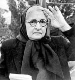

(1884 – 1964)

Halide Edip Adıvar, halkın büyük çoğunluğunun okuma yazma bilmediği bir ülkede doğup da İngilizce romanlar yazabilecek derecede bir kültür birikimine sahip olan bir romancı olarak yetişmeyi başarmış bir kadındı.
Ülkemizin ilk önemli kadın edebiyatçısı olan Halide Edip Adıvar İstanbul'da doğdu. Dönemin Tekel Bakanı Mehmet Edip Bey'in kızıydı. Üsküdar Amerikan Kız Koleji'ni bitirdi. Aile içinde Arapça, Kur'an-ı Kerim, Türk musikisi, matematik (Salih Zeki'den), felsefe ve edebiyat (Rıza Tevfik Bölükbaşı'dan) dersleri alarak özel öğrenim gördü. 1901'de matematik hocası Salih Zeki ile evlendi. 31 Mart Olayı üzerine Mısır'a kaçtı. Oradan İngiltere'ye geçti. Eğitimle ilgili yazıları beğenildiği için 1909'da Darü'l-Muallimat (Öğretmen Okulu) pedagoji öğretmenliğine getirildi. 1917'de ikinci evliliğini, sonradan Sağlık Bakanı olan Dr. Adnan Adıvar ile yaptı. İstanbul Üniversitesi Edebiyat Fakültesi'nde Batı edebiyatı dersleri verdi. Yunanlıların İzmir'i işgal etmesini protesto için yapılan meşhur Sultanahmet Mitingi'nde heyecan dolu bir konuşma yaptı. İstanbul'un işgal edilmesi üzerine kocası ile Anadolu'ya kaçarak Kurtuluş Savaşı'na katıldı. Sakarya Muharebesi'ni takip eden günlerde savaşa fiilen katılıp hastabakıcılık yaptı. Kendisine "onbaşı" ve "çavuşluk" rütbeleri verildi. Bu nedenle "Halide Onbaşı" olarak da anılmaktadır. O dönemde Anadolu Ajansı'nın da kuruluşuna öncülük yaparak gazeteciliğin ülkemizdeki önderlerinden biri oldu. Savaş sürerken Atatürk ile siyasi görüş ayrılığına düştü. 1917'de Adnan Adıvar ile birlikte yurtdışına çıktı. Fransa ve İngiltere'de yaşadı. Amerika'da Columbia Üniversitesi, Hindistan'da Delhi İslam Üniversitesi'nde konuk öğretim üyesi olarak dersler verdi. 1939'da Türkiye'ye döndü. İstanbul Üniversitesi Edebiyat Fakültesi İngiliz Filolojisi Kürsüsü Başkanı oldu. 1950'de milletvekili seçildi. Dört yıl sonra tekrar üniversiteye döndü. Ölümüne kadar kürsü başkanlığı görevini sürdürdü. 1964 yılı başında İstanbul'da hayata veda eden Halide Edip Adıvar'ın mezarı İstanbul Merkezefendi Mezarlığı'ndadır.
1910'da yayınlanan ilk romanı "Seviye Talip" ile 1911'de yayınlanan ilk öykü kitabı "Harap Mabetler" edebiyat çevrelerinde ilgiyle karşılandı. Romanlarında Batılı bir anlayışla idealize edilmiş, güçlü ve kültürlü kadınlara yer verdi. Kahramanlarının kişiliklerine, ruh yapılarına ve davranışlarına önem vererek bu özelliğiyle Türk romanında yeni bir adım attı. Kurtuluş Savaşı döneminde ulusçu, milli duyguları öne çıkaran roman ve öyküler kaleme aldı. "Yeni Turan", "Ateşten Gömlek" ve "Vurun Kahpeye" bu dönemin eserleridir. En tanınmış romanı "Sinekli Bakkal", yazarlığında olgunluk dönemini gösterir. Bu romanda Sinekli Bakkal mahallesinde yaşayan insanlar, aydınlar ve saray çevresi gibi II. Abdülhamit döneminin farklı toplumsal kesimleri canlandırılır. Bu romanın yazıldığı yıllarda Türkiye, bağımsız ve Batı yanlısı bir ülke olmayı tercih etmişti. Bir yandan da Tanzimat'tan beri süren Doğu-Batı çatışmasından kurtulamamıştı. Halide Edip, "Sinekli Bakkal"da Doğu'nun değerlerini bulup çıkarmak ve Batı'nın karşısına koymak amacındaydı.
Halide Edip, Türk kadınının iş, düşünce ve edebiyat alanında başarılı olan bir örneğidir. Kadın haklarının ateşli bir savunucusu olarak yıllarca mücadele verdi. Gördüğü eğitim nedeniyle, Doğu-Batı sentezini en başarılı şekilde yapabilen yazarlarımızdan biri oldu. Yazı hayatına gazete ve dergilerde yayımlanan makale, sohbet ve denemelerle başladı, bu eserlerinde kız çocuklarının eğitimi ve psikolojisi üzerinde durdu, aşk konusunu ön plana aldı. İlk romanlarında da aşk konusu ağır bastı. Kurtuluş Savaşı onun düşünce dünyasını değiştirdi, ideolojik romanlar yazmasını sağladı. Bazı romanları gelenek ve görenekler üzerine kurulmuş, sosyal hayatımızı çok canlı çizgilerle yansıtan töre romanlarıydı. Bu türden olan Sinekli Bakkal, 1943 yılında CHP Roman Yarışması'nda birincilik kazandı. Yazarın kısa ve fiilsiz cümleleri, sade bir dili vardı. Bu bakımdan yazarlığını eleştirenler de oldu. Kadın kahramanlarını, bütün eserlerinde kuvvetli ve canlı bir şekilde yansıttı. Halide Edip Adıvar, özellikle karakter yaratmada çok başarılıydı. Cumhuriyet döneminin en çok okunan eserlerini yazmış olan Halide Edip Adıvar'ın kitaplarının bir kısmı Batı dillerine çevrildi. Sanatçının eserlerinden çoğu sonraları sinemaya ve TV dizilerine de uyarlandı.
Seçme Romanları: Handan (1912), Ateşten Gömlek (1923), Vurun Kahpeye (1923), Kalp Ağrısı (1924), Sinekli Bakkal (1936), Yolpalas Cinayeti (1937), Tatarcık (1939)